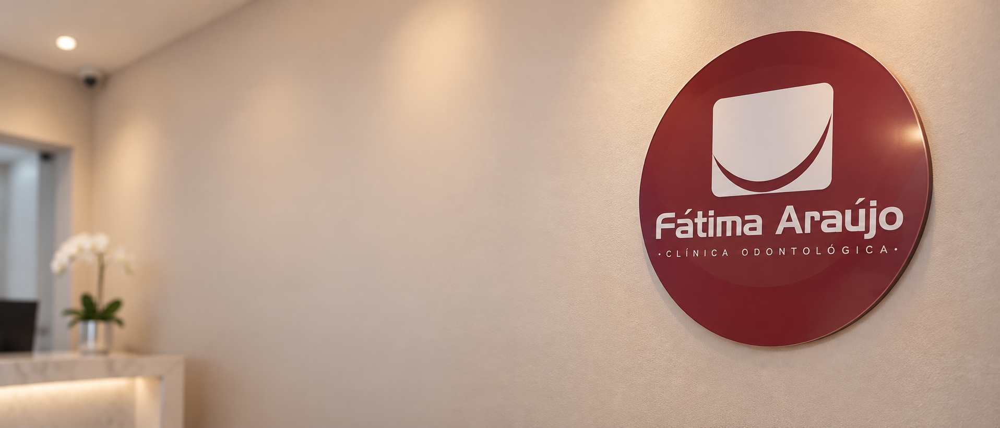

Avaliação odontológica
Entenda o momento atual da sua saúde bucal e quais são os próximos passos possíveis.
Odontologia em Icaraí, Niterói
Um espaço de atendimento odontológico com presença humana, escuta e clareza em cada etapa.

Presença construída no tempo
Informações públicas reunidas para você chegar com mais segurança.
Antes de qualquer procedimento
Escolher um atendimento odontológico envolve mais do que encontrar um endereço. É entender como chegar, quem vai receber você e o que acontece depois do primeiro contato.
Esta página organiza as informações públicas da clínica para tornar esse primeiro passo mais simples. Para detalhes sobre profissionais, especialidades, convênios e acessibilidade, confirme diretamente com a equipe.
Atendimentos
A clínica é registrada como atividade odontológica e clínica/centro de especialidade. A disponibilidade de cada atendimento deve ser confirmada.
Entenda o momento atual da sua saúde bucal e quais são os próximos passos possíveis.
Converse sobre caminhos de cuidado, prioridades e acompanhamento com mais clareza.
Uma primeira conversa para entender a necessidade de cada pessoa atendida.
As especialidades e tratamentos disponíveis não foram confirmados no material público consultado.
Uma jornada mais clara
Você não precisa chegar com todas as respostas. Precisa encontrar um canal aberto para começar.
Use o telefone ou e-mail para confirmar disponibilidade, atendimento e localização.
Combine o melhor horário diretamente com a equipe da clínica.
Leve suas dúvidas para uma avaliação e defina o caminho com orientação profissional.
Relatos públicos
Trechos de avaliações públicas arquivadas. Eles representam experiências individuais, não uma promessa de resultado.
“Muito satisfeita com o atendimento do Dr. Lucas. Atendimento maravilhoso desde a recepção, equipe super gentis e ambiente acolhedor.”Maria da Graça Rufino Guido · avaliação pública
“Clínica extremamente confortável, com profissionais de alto nível e atendimento totalmente humanizado.”Regis Cesar Rheim · avaliação pública
Perguntas frequentes
Rua Álvares de Azevedo, 252, complemento 201 S, Icaraí, Niterói/RJ, CEP 24220-021. Confirme a orientação de chegada no momento do agendamento.
O CNES consultado informa segunda a sexta, das 9h às 18h. Como horários podem mudar, confirme diretamente com a clínica.
Entre em contato pelo telefone (21) 96407-5922 ou pelo e-mail fatimaaraujoodontologia@gmail.com para verificar disponibilidade.
Não foi localizada confirmação atualizada sobre convênios no material consultado. Pergunte à equipe antes de agendar.
Seu próximo passo pode começar aqui.